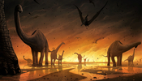

Een nauwgezette analyse van boorkernen uit de Chicxulub-krater heeft aanvullend bewijs gevonden voor de theorie dat de inslag van een asteroïde 66 miljoen jaar geleden geleid heeft tot een massale uitsterving, onder meer van de meeste dinosauriërs. De boorkernen hebben de onderzoekers, onder wie geologen van de VUB, ook toegelaten de 'laatste dag van de dinosauriërs' of de eerste dag van het Cenozoïcum te reconstrueren.
De boorkern die in 2016 voor de kust van Mexico naar boven is gehaald, heeft uniek onderzoeksmateriaal opgeleverd.
"Deze kern biedt een volledig nieuwe blik op de processen verantwoordelijk voor het ontstaan en het opvullen van de Chicxulub-krater. Met dit materiaal kunnen we nu de gebeurtenissen op ground zero in de eerste minuten tot dagen na de inslag ontrafelen”, zo zei Steven Goderis in een persmededeling van de VUB.
De VUB-onderzoekers van het Analytical, Environmental and Geo- Chemistry team gebruikten voor hun analyses moderne technieken zoals micro-XRF. Dit is een instrument waarmee de chemische samenstelling van gesteenten wordt gemeten op een schaal honderd keer kleiner dan een millimeter.
"Door deze metingen vervolgens te vergelijken met beschrijvingen van stukjes steen onder de microscoop wisten we zeker dat er geen zwavelhoudende mineralen meer aanwezig waren in de boorkern. We konden nu in detail de eerste dagen na de inslag reconstrueren. Het voelde alsof we er zelf bij waren geweest”, aldus Sietze J. de Graaff.
Wetenschappers nemen al langer aan dat de impact van een twaalf kilometer grote meteoriet, die naar schatting de kracht had van tien miljard Hiroshima-atoombommen, catastrofale gevolgen heeft gehad voor het leven op aarde. Een nauwkeurige analyse van gesteenten uit boorkernen die afkomstig zijn uit de enorme Chicxulub-meteorietkrater in Mexico, wijst nu uit dat die hypothese klopt.
De onderzoekers vonden namelijk geen sporen van het element zwavel terug in de gesteenten uit een 800 meter lange boorkern uit het middelste deel van de krater. De rotsen en stenen in de ondergrond rondom de krater bevatten daarentegen wel grote hoeveelheden zwavel.
Dit bevestigt de theorie dat door toedoen van de meteoriet de zwavelhoudende mineralen op de plek van de inslag volledig verdampten en in de atmosfeer terechtkwamen, naar schatting zo’n 325 miljard ton.
"Deze enorme hoeveelheid zwavelgas ging verbindingen aan met waterstof en op die manier ontstond er in de hogere atmosfeer een deken van stofdeeltjes dat zich over de hele wereld verspreidde. Hierdoor viel er geen zonlicht meer op aarde en de aanhoudende duisternis resulteerde uiteindelijk in het uitsterven van driekwart van het leven op onze planeet, waaronder de dinosauriërs”, zegt VUB-doctoraatsstudent Pim Kaskes, die samen met collega Sietze de Graaff en de professoren Steven Goderis en Philippe Claeys meewerkte aan het onderzoek.
Gemakshalve wordt meestal gezegd dat de meteoriet het einde betekende van de dinosauriërs, maar één groep dinosauriërs, de voorouders van de vogels, overleefde de meteoriet wel.
Het zwavelgas in de atmosfeer zal overigens niet alleen een 'nucleaire winter' veroorzaakt hebben, die mogelijk wel tien jaar geduurd heeft, maar ook wereldwijde zure regen.
Bron: VRT Nieuws